Now that we know how to use shaders and draw some patterns let's make fair use of it and create a raging sea.
We are going to animate the waves and keep control of the parameters with the debug panel.
For now, all we have is a rotated plane using MeshBasicMaterial. The geometry has a 128x128 subdivision. We are going to animate the vertices to get the waves and we need quite a lot of vertices. 128x128 might not be enough, but we will increase the value if required.
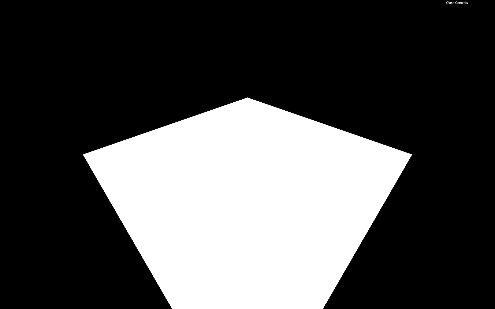
Let's replace the material by a ShaderMaterial:
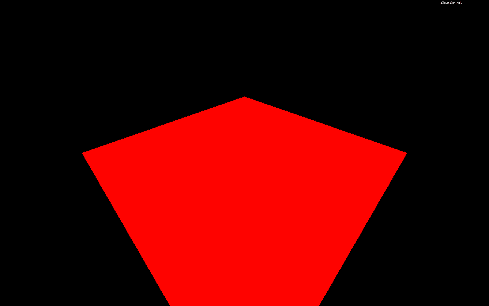
Our Webpack configuration already supports GLSL files, but we need to create these files.
Create the vertex shader in /src/shaders/water/vertex.glsl:
Now create the fragment shader in /src/shaders/water/fragment.glsl:
Finally, import those shaders in your script and use them in a ShaderMaterial:
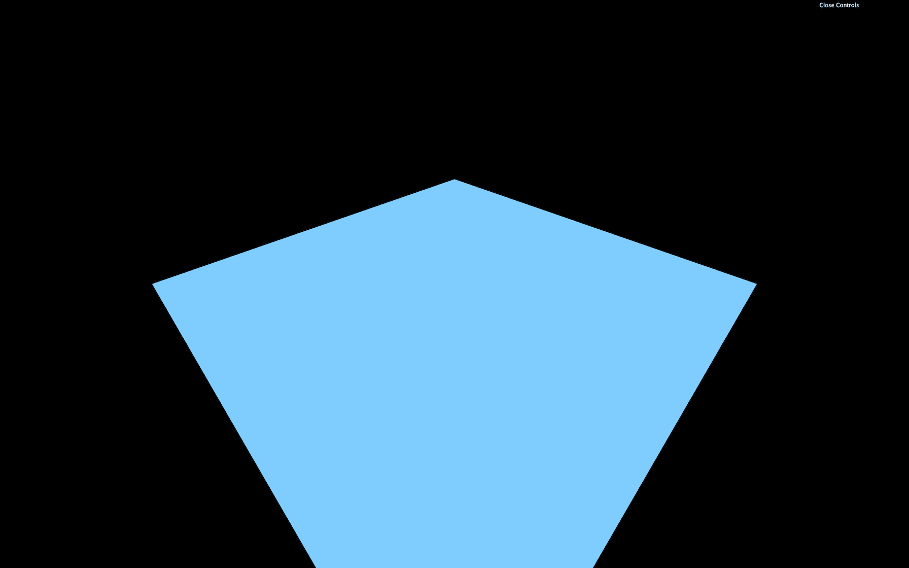
You should get a blue plane. If not, check the logs.
If you did all of this from memory, congratulation, you are a genius. If not, it's perfectly normal, and you only need time.
We begin with the big waves to get significant results quickly. What's better than a sinus to create waves?
In the vertex shader, let's move the y value of the modelPosition with a sin(...) based on the x:
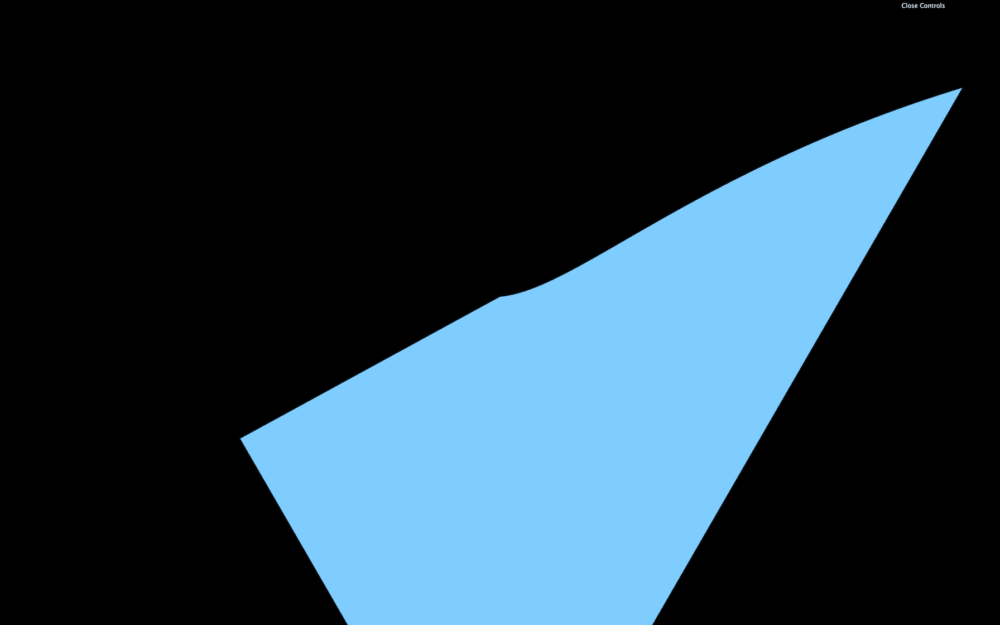
The displacement and frequency should be way too high. Instead of just multiplying the values numbers coming out from nowhere in the shader, we will use uniforms to have more control over them.
Let's start with the elevation.
Add a uBigWavesElevation uniform to the ShaderMaterial:
We can now retrieve and use the uBigWavesElevation uniform in the vertex shader:
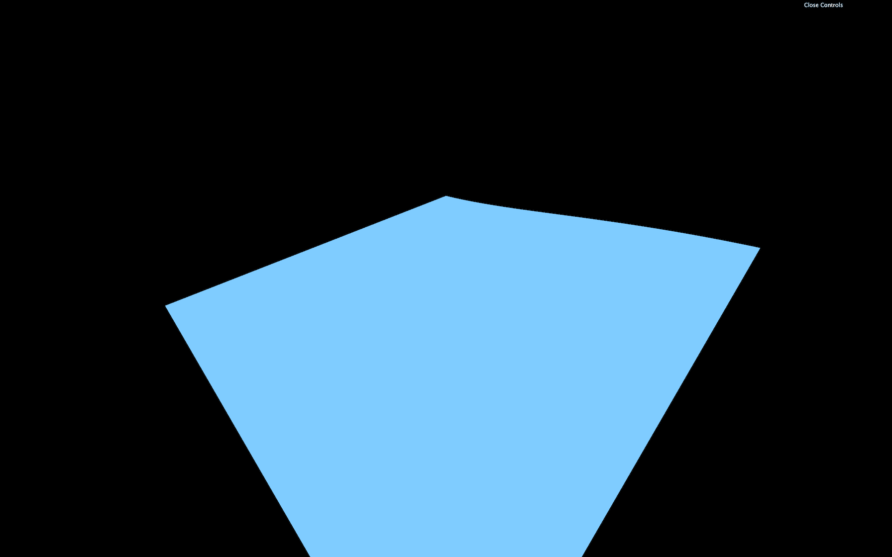
Instead of updating the y property directly, we should use a variable named elevation. This will get handy later when we are going to color those waves:
Because the elevation is now handled in the JavaScript, we can add it to our Dat.GUI:
We can now take care of the frequency. Currently, the waves elevation only changes on the x axis but it would be even better to control both x and z axes.
Create a uBigWavesFrequency uniform with a Vector2:
In the vertex shader, retrieve the uniform —be careful, it's a vec2— and apply it in the sin(...) with only the x property to begin with:
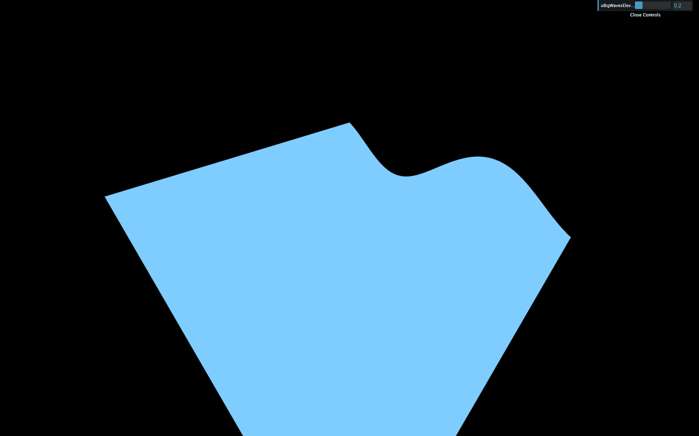
This should result in more waves because the frequency is higher.
Let's use the second value of the uBigWavesFrequency (y) to control the waves on the z axis. We can do that by multiplying the first sin(...) by another sin(...):
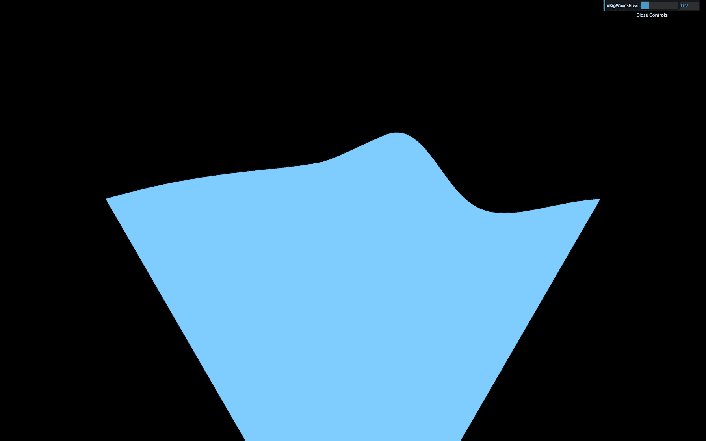
You should get waves on the z axis too.
We can now add those x and y properties to our Dat.GUI:
Let's animate these big waves. We are going to use the elapsed time as we did in a previous lesson to offset the value in the sin(...) and create the animation.
First, create a uTime uniform in the ShaderMaterial:
Then, update the value in the tick function:
In the vertex shader, retrieve and use the uTime in both sin(...) functions:
You now get animated waves. While the speed is ok for a raging sea, it would be great to be able to control it.
Let's create a uBigWavesSpeed uniform and multiply our uTime by it. We will use a float to make it more simple, but if you want to control both axes speed separately, you can use a vec2.
Create the uBigWavesSpeed uniform in the ShaderMaterial and add the tweak:
In the vertex shader, retrieve the uBigWavesSpeed uniform and multiply the uTime by it in both sin(...) functions:
Our elevation formula is taking way too long. Don't hesitate to refactor a little by using variables or simple line breaks:
Our waves are starting to look great, but that uniform blue color doesn't help.
Let's produce two colors, one for the depth and one for the surface. If you remember, adding Three.js colors to Dat.GUI is a little complicated.
First, we need to create a debugObject right after the gui instantiation:
Then, right before the waterMaterial instantiation, we can create these two colors as properties of debugObject, and use them in two new uniforms that we will call uDepthColor and uSurfaceColor. These colors will be using the Color class:
We can then add them to our Dat.GUI with the addColor method. We also need to update the waterMaterial uniforms when the color changes with onChange(...):
You should see the color tweaks, but changing them doesn't affect the material. That is because we haven't use the uDepthColor and uSurfaceColor uniforms in our shader yet.
In the fragment shader, start by retrieving these colors:
And use only one color to verify that everything is working:
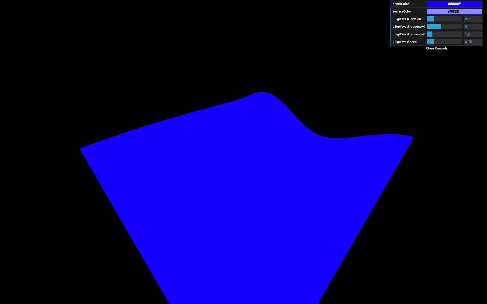
What we need to do now is use more of the uDepthColor if the wave is low and more of the uSurfaceColor if it is high.
Remember the previous lesson, we are going to use the mix(...). This function needs a first input, a second input, and a value that will dictate how to mix these two first inputs.
0.0, the result will be the first input.1.0, the result will be the second input.0.5, the result will be a perfect mix of the two inputs.0.0 or above 1.0 the value will be extrapolated.The two first parameters are, as you can imagine, the uDepthColor and the uSurfaceColor. But what about the third value that controls the mix?
We could use the elevation, unfortunately this variable is in the vertex shader.
To transmit this variable to the fragment shader —like we did in the previous lessons— we are going to use a varying. In the vertex shader, create a vElevation varying and update it in the main function:
In the fragment shader, retrieve the varying. Then create a color variable that mixes the uDepthColor and the uSurfaceColor according to the vElevation:
You should see a very slight variation in the color. The problem is that our vElevation currently only goes from - 0.2 to + 0.2 according to our code. We need to find a way to control this vElevation, but only in the fragment shader.
Let's add some uniforms! We will create a uColorOffset and uColorMultiplier, and add both of them to our Dat.GUI:
Now retrieve the uColorOffset and uColorMultiplier uniforms in the fragment shader, create a mixStrength variable —to make it easier to read— based on these two uniforms, and use that variable in the mix(...) function:
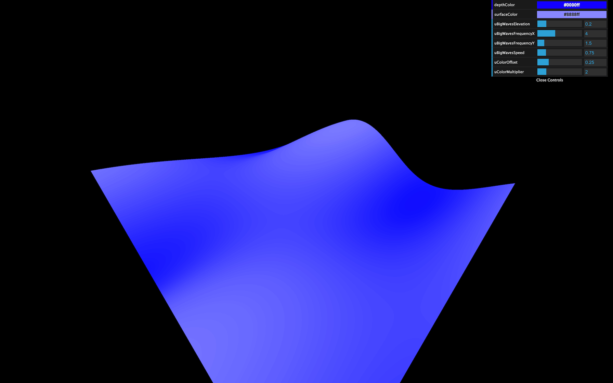
You obtain a much better gradient. Tweak the values to secure colors you like:
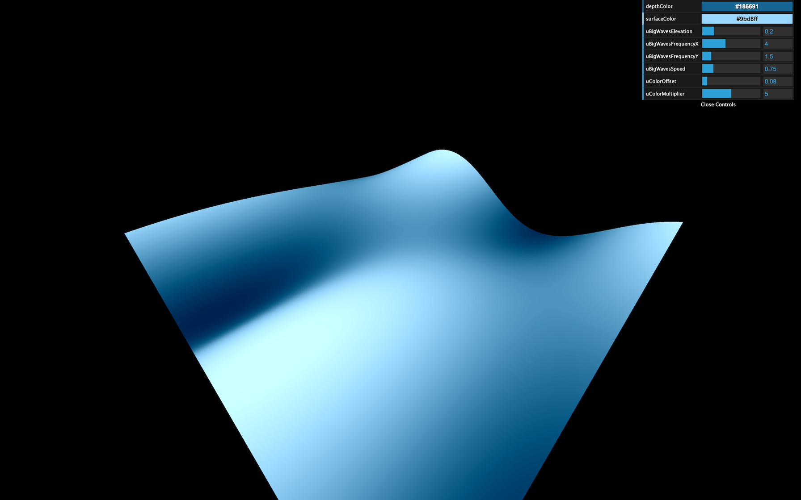
For the small waves, we are going to use a perlin noise. We used a 2D perlin noise in the previous lesson, where we sent 2D coordinates and got a float value in return. This time, we are going to use a 3D perlin. That will enable variations of that noise in time for a more realistic result.
Go to the same gist as during the previous lesson and copy the Classic Perlin 3D Noise by Stefan Gustavson: https://gist.github.com/patriciogonzalezvivo/670c22f3966e662d2f83
Or copy the code below to the vertex shader:
No fix needed this time.
We can now use the cnoise function with a vec3 as parameter.
Here are the three values of the vec3:
x will be the x of modelPositiony will be the z of modelPositionz will be uTime. That third value will make the noise evolve in a natural and realistic style.
This is not the expected result. First, the waves speed is too fast. So you must multiply the uTime by 0.2:
Secondly, the frequency is too small. That results in waves as large as the big ones we created previously. To increase the frequency, multiply modelPosition.xz by 3.0:
Thirdly, the waves are way too high. Let's reduce that by multiplying the noise by 0.15:
Finally, real-life waves aren't that smooth. Realistic waves have rounded troughs and high crests. To achieve this result, we can use the abs(...) function:
We got exactly the opposite of what we wanted with rounded crests and high troughs. To invert the waves, replace + by -:
That's better, but when you look at waves in a raging sea, they seem more chaotic with different and unpredictable frequencies.
We need to apply even more noises at higher frequencies. We could repeat the previous line with different values, but it's the perfect occasion to use a for(...) loop.
for(...) loops work in GLSL. Just make sure to use a float type variable. We are going to use 3 iterations starting from 1.0:
Then move our previous formula in the loop:
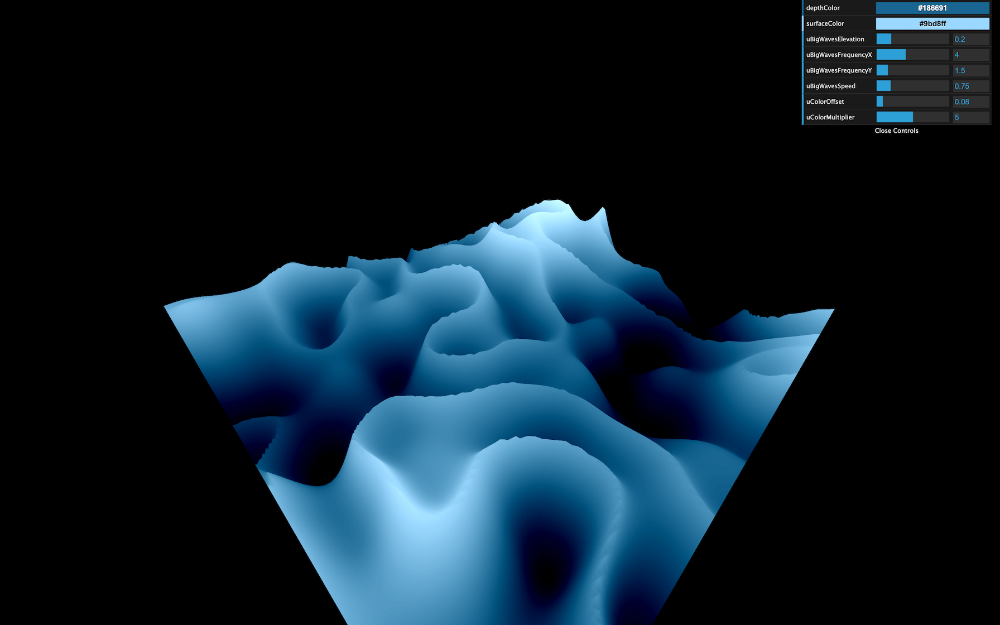
Right now, we are applying 3 times the same formula, which should result in the same waves, but their amplitude is much more prominent.
Let's increase the frequency and reduce the amplitude according to the i variable:
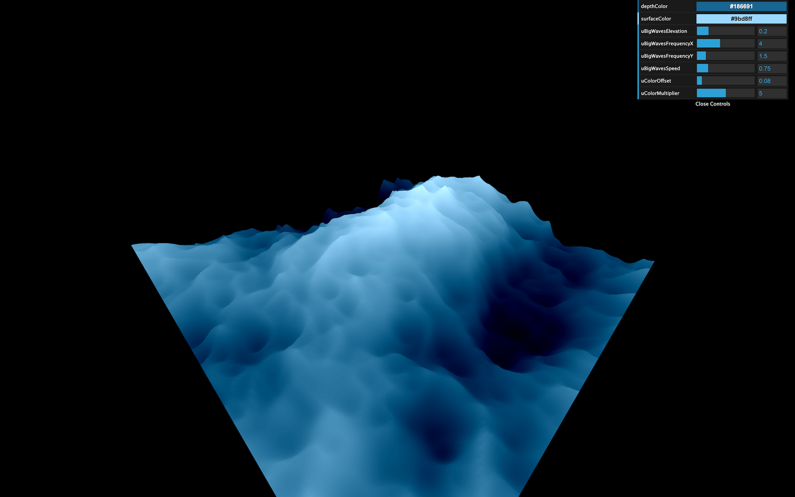
That's much better. Maybe you haven't noticed it, but we can barely see the smaller waves. That is because our geometry is missing vertices. Increase the subdivisions to 512x512:
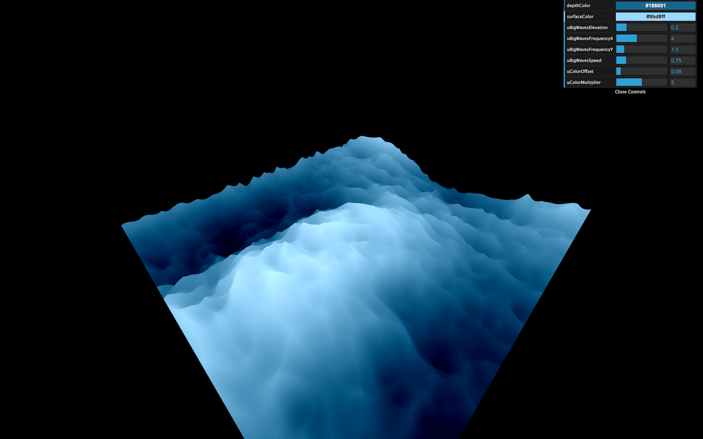
That represents a lot of triangles, but the plane is the only geometry we have in the scene, and we are animating almost everything in the shader, meaning that the GPU is doing the heavy lifting.
Let's add some uniforms and tweaks to control these small waves:
And in the vertex shader:
And that's it.
If you wanted to go further, you could try to add foam.
You could also attempt to enlarge the plane.
Adding fog would be a great way to get a more immersive experience that would enhance the feeling of being lost in the sea. Be careful though, adding fog will be more challenging than what we saw because you need to write the code for that fog on your own.